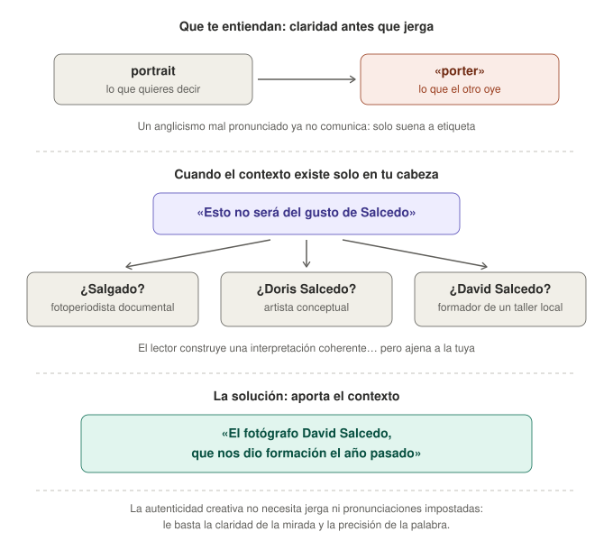
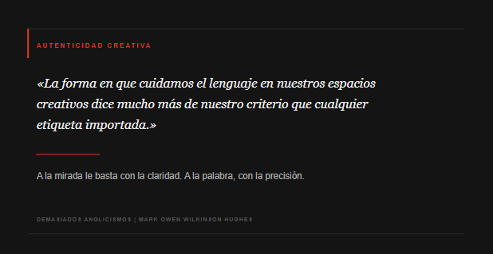

Tanto en el mundo del comercio como en las asociaciones y grupos creativos en España, la importación habitual de términos en inglés suele tratarse como una muestra de modernidad y sofisticación global. Sin embargo, esta tendencia genera a menudo una mezcla peculiar e incoherente que crea una fricción real, tanto para los hispanohablantes autóctonos (los españoles nativos) como para los ciudadanos nacionalizados que nacieron en otros países (es decir, los españoles naturalizados).
Para los hispanohablantes que se sienten orgullosos de su idioma, la sustitución indiscriminada de términos visuales tan ricos —fotografía callejera, recorrido fotográfico, paseo fotográfico— por anglicismos importados puede percibirse como una erosión innecesaria de la riqueza expresiva del español.
Pero existe otra perspectiva menos evidente. Para los españoles naturalizados que llevan décadas viviendo en España, participan plenamente en su sociedad, hablan español a diario y, además, tienen el inglés como lengua materna, la experiencia puede resultar doblemente chocante. No porque el inglés sea un problema —todo lo contrario—, sino porque escuchar determinadas palabras inglesas deformadas dentro de una conversación en castellano produce el efecto exactamente contrario al que se pretende.

La prueba del algodón oral: cuando el texto escrito choca con la realidad fonética
En el plano escrito y en las actas de los chats, la jerga viste mucho y parece aportar un barniz técnico e internacional. Sin embargo, la verdadera prueba de fuego ocurre en las conversaciones cara a cara, donde el modelo se desmorona rápidamente.
«Estri», «App» vs. Up etc.
Un ejemplo cotidiano es «estri», adaptación fonética de street. Al añadir una «e» protética inicial, adaptar la palabra a la fonética del español y acortarla sin su consonante final, se crea una especie de inglés híbrido o versionado que no añade nada para un hispanohablante y que, para un angloparlante nativo, resulta completamente antinatural.
El fenómeno se vuelve casi cómico cuando se intenta teorizar en persona sobre subgéneros especializados. Es relativamente frecuente escuchar a perfiles referentes en estos entornos referirse al street portrait (retrato callejero) pronunciándolo de forma tan deformada que suena exactamente como street porter. Para cualquier persona con oído lingüístico o con el inglés como lengua materna, la mente vuela de inmediato a un mozo de equipajes en un hotel (hotel porter) o a un celador de hospital (hospital porter), destruyendo por completo la supuesta precisión conceptual que se pretendía proyectar.
Ocurre algo similar con herramientas tecnológicas internacionales como GitHub. Al haber aprendido el término de forma puramente visual dentro de un entorno local, se adopta una pronunciación plenamente adaptada a los valores vocálicos del español —«GitHAb»—. ¿Y qué ocurre entonces? La comprensión auditiva está estrechamente vinculada a los patrones de pronunciación que uno ha aprendido y utilizado y, en cierta medida, también ocurre lo contrario: la forma en que pronunciamos una palabra condiciona nuestra capacidad para reconocerla cuando la escuchamos. Cuando un angloparlante nativo pronuncia la palabra con su pronunciación y acentuación habituales, el oyente local puede incluso ser incapaz de reconocerla inmediatamente.
Aunque esto no demuestra que el oyente no esté utilizando el inglés, sí revela una variedad local de términos ingleses cuya pronunciación se ha alejado considerablemente de la referencia internacional.
A lo largo de mi vida profesional en España he oído a españoles nativos comentar, con cierta frecuencia: «Yo entiendo perfectamente el inglés cuando me lo habla un español; pero cuando me hablan los ingleses, no me entero de nada».
Y ya sabes por qué.
Desde luego, ese «los ingleses» suele utilizarse coloquialmente para referirse, en realidad, a prácticamente cualquier angloparlante nativo: escoceses, galeses, irlandeses, estadounidenses, australianos, neozelandeses también, etc.
La paradoja es evidente. Si la comprensión depende de que el interlocutor pronuncie una lengua extranjera siguiendo los patrones fonéticos a los que el oyente local está acostumbrado, quizá no esté demostrando que «entiende inglés perfectamente», sino que entiende una determinada versión. Como consecuencia del fenómeno, se oye el término «espanglish» bastante comúnmente.
La falacia de la globalización
Quienes defienden este uso intensivo de términos extranjeros suelen recurrir al argumento de la globalización, sosteniendo que usar palabras en inglés facilita el entendimiento con otros profesionales europeos. Se afirmó, por ejemplo, que decir marketing a un contacto francés resultaría más comprensible que utilizar la palabra española mercadotecnia.
Sin embargo, este razonamiento incurre en dos errores fundamentales:
- Ignora la realidad cultural de otros países: Naciones como Francia pueden ser profundamente celosas de su patrimonio lingüístico. Muchas veces, priorizan de forma oficial su propio vocabulario (mercatique) frente a los préstamos del inglés.
- Confunde la palabra con su pronunciación: Transmitir un anglicismo con fonética castellana rígida no construye un puente internacional. Lo que se genera no es una lingua franca europea, sino un espanglish de consumo interno que, frecuentemente, resulta incomprensible a ambos lados de la frontera.
De la herramienta a la insignia
Tal vez no todos los anglicismos son innecesarios ni constituye postureo todo uso del inglés. Hoy día, está claro que hay términos que forman parte del vocabulario internacional de determinadas profesiones o tecnologías y que resultan perfectamente funcionales. No obstante, el problema aparece cuando existe una expresión castellana clara, precisa y asentada —y, aun así, se sustituye sistemáticamente por su equivalente inglés sólo porque parece más moderno o sofisticado.
Es entonces cuando el idioma deja de funcionar como una herramienta de comunicación y empieza a funcionar como una insignia de pertenencia.
En el mundo cotidiano encontramos ejemplos por todas partes: «workshop» por taller, «meeting» por reunión, «feedback» por comentarios o valoración, «networking» por hacer contactos, «briefing» por reunión informativa, «team building» por actividades de cohesión de equipo. Cuando se convierten en sustitutos automáticos de palabras españolas válidas, la cuestión deja de ser lingüística y pasa a ser social: ¿qué se pretende comunicar realmente con el cambio?
La paradoja es que cuanto más se intenta aparentar internacionalidad, más artificial resulta el lenguaje.
De los «guardianes del idioma» al lapsus del apellido suelto
Existe en estos círculos una segunda paradoja aún más reveladora: el comportamiento de quienes asumen el papel de fiscalizadores o celadores de la pureza lingüística.
En ocasiones, son esos mismos perfiles que reclaman públicamente la presencia del castellano ante cualquier iniciativa ajena —recurriendo incluso a una marcada insistencia paternalista («¿pero hay versión en español, en español?»)— los que terminan cayendo en la trampa del condicionamiento.
El caso resulta ilustrativo: al hacer referencia en un acta a la obra del fotógrafo estadounidense Stephen Shore, se introduce únicamente el apellido suelto («Shore»), sin nombre de pila ni inicial que lo contextualice. En un grupo de trabajo cuyo oído colectivo ha sido previamente expuesto a un goteo incesante de anglicismos forzados (workshop, briefing, street), el resultado es inevitable: varios participantes no identifican al autor neoyorquino, sino que asumen de inmediato que, probablemente, se trata de otro anglicismo importado para referirse a la «fotografía de playa u orillas del mar» (shore).
Quien pretendía fiscalizar la presencia del español acaba generando un malentendido conceptual por pura falta de precisión contextual.
Cuando la corrección se convierte en hipercorrección
Existe un fenómeno todavía más curioso: no limitarse a utilizar el inglés, sino "corregir" el castellano o el nombre original de una marca para hacerlo parecer más inglés.
Un caso reciente lo ilustra a la perfección. Por ejemplo, un evento convocado por la comunidad de la empresa internacional fotoapp.co se denomina oficialmente «Foto Walk». Sin embargo, en documentos y resúmenes locales en un club de fotografía en castellano, hay quien lo transforma instintivamente, por lo visto, en «Photowalk».
Aquí no hay ningún problema lingüístico que resolver. Foto Walk es el nombre propio del evento. Cambiarlo por «Photowalk» no lo hace más correcto; simplemente lo hace parecer más inglés.
Cuando se ha interiorizado que English = modern = professional = better, la modificación se convierte en un reflejo automático. Ya no se traduce para facilitar la comprensión de un angloparlante; se «mejora» el nombre porque la forma inglesa parece, por alguna razón, más legítima.
La situación roza la ironía cuando el supuesto perfeccionamiento consiste en cambiar la palabra FOTO por PHOTO, a pesar de que la propia empresa estadounidense se llama «FOTO». La palabra española deja de parecer lo bastante sofisticada simplemente porque no lleva ph.
¿En qué momento una traducción deja de ser una traducción y se convierte en una hipercorrección? En muchos de estos casos no se utiliza el inglés para comunicarse con un angloparlante, sino una representación del inglés para proyectar estatus ante otros españoles.
Una cuestión de atención, precisión y contexto
Este fenómeno forma parte de un cambio cultural más amplio. En una cultura dominada por la rapidez, los mensajes breves, las notificaciones y la gratificación inmediata, la atención sostenida compite constantemente con la necesidad de pasar al siguiente estímulo. El problema no es que las pantallas sean intrínsecamente perjudiciales: pueden ser herramientas extraordinariamente eficaces para aprender, investigar y comunicarse. La cuestión es cómo se utilizan y qué tipo de atención fomentan.
La investigación sobre lectura ofrece un ejemplo interesante. Un metaanálisis de estudios experimentales encontró una pequeña ventaja de la lectura en papel frente a la lectura en pantalla en determinadas medidas de comprensión, especialmente con textos expositivos. No significa que leer en una pantalla impida comprender un texto; significa que el medio puede influir, aunque modestamente, en la forma en que procesamos información compleja.
En matemáticas ocurre algo parecido. Los datos internacionales de PISA muestran que el uso moderado de dispositivos digitales con fines educativos no es necesariamente perjudicial y puede incluso asociarse con mejores resultados. Sin embargo, la distracción digital durante las clases de matemáticas sí presenta una relación clara con un peor rendimiento. En otras palabras, no es la tecnología en sí la que constituye el problema, sino su uso excesivo, inadecuado o distractor.
Y esto importa porque tanto la lectura profunda como las matemáticas requieren algo que la cultura de la inmediatez no siempre favorece: mantener información en la mente, seguir una secuencia, establecer relaciones entre ideas y resistir la tentación de saltar inmediatamente al siguiente estímulo.
Un problema matemático, por ejemplo, no consiste simplemente en reconocer unas cifras y efectuar una operación. Hay que comprender el enunciado, identificar qué información es relevante, conservarla en la memoria de trabajo, establecer las relaciones entre los datos y seguir una secuencia lógica. Del mismo modo, leer un texto con profundidad no consiste en localizar palabras clave y obtener rápidamente una respuesta: parte del significado sólo aparece cuando somos capaces de mantener una idea en la cabeza durante varios párrafos.
La precisión lingüística forma parte de ese mismo problema. Cuando sustituimos sistemáticamente la palabra precisa por la etiqueta de moda, la explicación por la jerga o la reflexión por la reacción inmediata, podemos terminar confundiendo velocidad de procesamiento con comprensión.
Cuando el contexto existe solamente en la cabeza del hablante
Los problemas de comunicación no aparecen únicamente al utilizar anglicismos innecesarios. También surgen cuando quien habla presupone que los demás poseen exactamente la misma información contextual que él.
En un foro o debate artístico se puede escribir, por ejemplo, un comentario tan escueto como: «Esto no será del gusto de Salcedo». Al omitir el nombre de pila y el marco de referencia, el receptor se ve obligado a adivinar:
- ¿Se están refiriendo por un despiste léxico al célebre fotoperiodista documental (confundiendo Salgado con Salcedo)?
- ¿Se refieren a la reconocida artista conceptual internacional Doris Salcedo?
- ¿O aluden simplemente al formador que impartió un taller local recientemente (David Salcedo)?
El resultado es paradójico: el hablante posee el contexto completo en su mente y deja de percibir qué parte necesita transmitir. El receptor, intentando atar cabos con la información disponible, puede construir una interpretación perfectamente coherente... pero completamente ajena a la que el emisor tenía en cabeza.

La solución es tan sencilla como elegante: aportar el contexto necesario. Especificar el nombre completo o añadir una breve referencia («el fotógrafo David Salcedo, que nos dio formación el año pasado») elimina cualquier ambigüedad de un plumazo.
Esto no significa complicar el discurso ni hacer alarde de conocimientos. Tal vez parezca una cuestión insignificante; sin embargo, refleja una regla fundamental de la buena comunicación. El orador o escritor en un foro no debería obligar al lector a adivinar aquello que el propio hablante ya sabe.
La verdadera competencia lingüística no consiste en conseguir que los demás admiren cuánto sabemos o qué palabras internacionales utilizamos. Consiste en lograr que entiendan con absoluta claridad lo que queremos decir.
Al final, la forma en que cuidamos el lenguaje en nuestros espacios creativos dice mucho más de nuestro criterio que cualquier etiqueta importada. Y es que la autenticidad creativa no necesita jerga superficial ni pronunciaciones impostadas: le basta con la claridad de la mirada y la precisión de la palabra.
